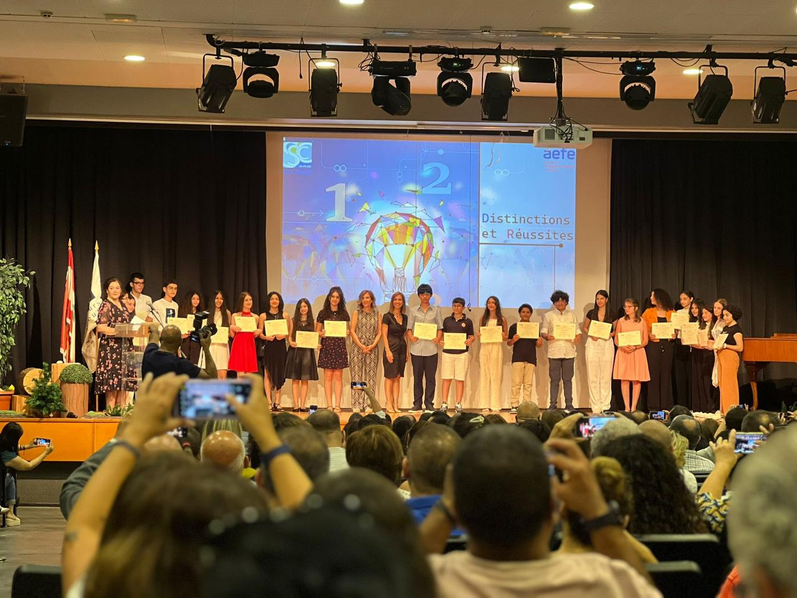
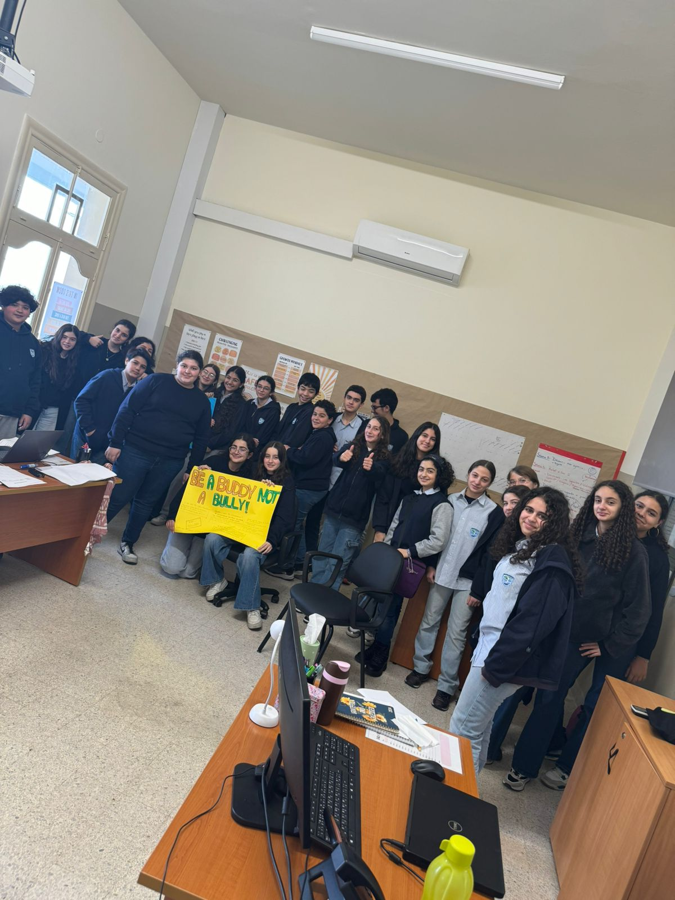

Nous sommes un groupe d'élèves engagés à promouvoir la médiation et la résolution de conflits au sein de notre communauté scolaire.
Nous intervenons auprès des élèves en conflit pour les aider à résoudre leurs problèmes de manière constructive, afin d'aboutir à une solution bénéfique pour tous. Notre objectif est de créer des relations saines, basées sur la communication, et de lutter contre le harcèlement scolaire.
Nos projets comprennent des activités de sensibilisation et de prévention, telles que des sessions de jeu. Nous mettons également à disposition une salle, prête à vous accueillir pour les séances de médiation. Ces initiatives sont spécifiquement conçues pour lutter contre le harcèlement et la violence au sein de notre établissement.
Reserve une sesion de mediation

